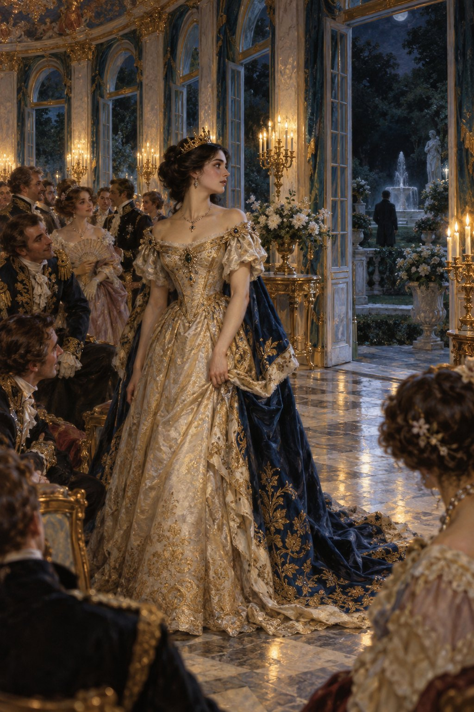
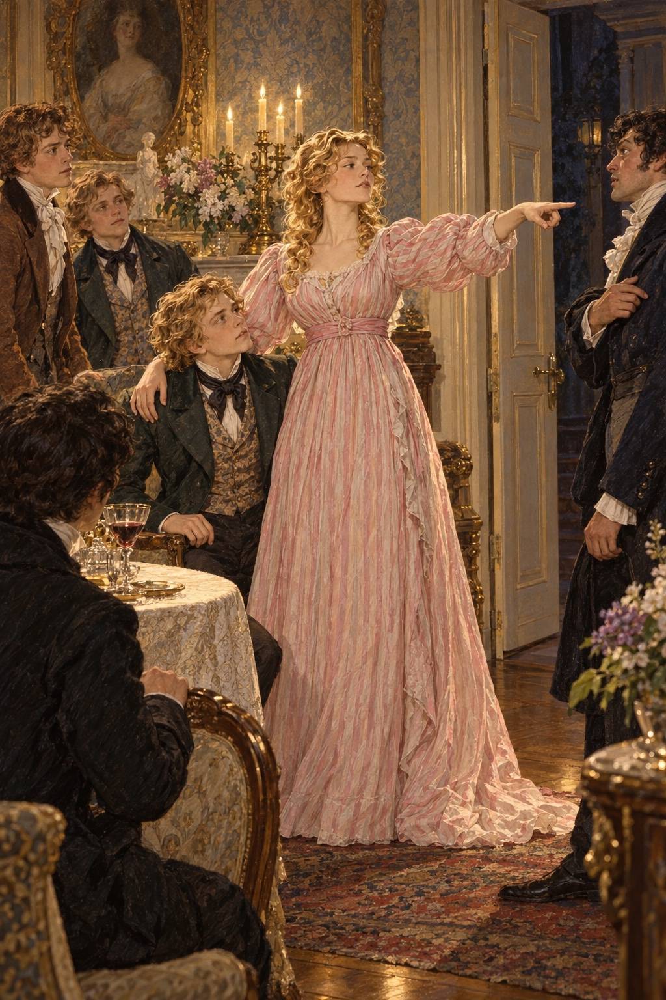

Ivan Turgenev · First Love
제16장
점심 뒤
손님들이 다시 별채에 모였다.
지나이다도 나왔다.
처음 그 집을 찾았던
잊지 못할 저녁처럼
모든 사람이 있었다.
니르마츠키도 나타났다.
마이다노프는 누구보다 일찍 와
새 시를 가져왔다.
다시 벌칙 놀이를 했지만
지난번 같은 요란한 장난이나
소란은 없었다.
집시 무리처럼 들뜨던 기운이
사라졌다.
지나이다가 모임의 분위기를
바꾸어 놓은 것이다.
나는 시종 자격으로
그녀 곁에 앉았다.
제비가 뽑힌 사람이
꿈 이야기를 하자는
지나이다의 제안이 나왔다.
하지만 잘되지 않았다.
꿈이 재미없거나
꾸며 낸 티가 났다.
벨로브조로프는
말에게 붕어를 먹이고
말의 머리가 나무로 된
꿈을 꾸었다고 했다.
마이다노프는
거의 한 편의 이야기를 늘어놓았다.
무덤 속 납골당,
수금을 든 천사,
말을 하는 꽃,
먼 곳에서 들려오는 소리까지
등장했다.
지나이다는
끝까지 듣지 않았다.
“지어낼 거라면
차라리 모두가
반드시 꾸며 낸 이야기를
하도록 해요.”
첫 번째로
벨로브조로프의 제비가 뽑혔다.
젊은 경기병 장교는
당황했다.
“아무것도 지어내지 못하겠어요!”
“그게 뭐가 어려워요?”
지나이다가 말했다.
“이를테면 결혼했다고 상상해 보세요.
아내와 어떻게 지낼 건지
이야기하면 되잖아요.
아내를 가둬 둘 건가요?”
“가둬 두겠습니다.”
“본인도 함께 있을 거예요?”
“물론 함께 있지요.”
“좋아요.
그런데 아내가 지겨워져서
다른 남자를 만나면요?”
“죽이겠습니다.”
“도망간다면요?”
“쫓아가서
그래도 죽이겠습니다.”
“그렇군요.
제가 당신 아내라면
어떻게 하시겠어요?”
벨로브조로프는
한참 말이 없었다.
“저를 죽이겠습니다.”
지나이다가 웃었다.
“이야기가 금방 끝나네요.”
두 번째 제비는
지나이다에게 돌아갔다.
그녀는 천장을 보며
생각에 잠겼다.
“들어 보세요.”
마침내 그녀가 말했다.
“이런 이야기가 떠올랐어요.
화려한 궁전,
여름밤,
놀라운 무도회를 상상해 보세요.
젊은 여왕이 여는 무도회예요.
사방에 금과 대리석,
유리 장식과 비단,
불빛과 보석,
꽃과 향이 가득하지요.
호사스러운 것이란
모두 다 있어요.”

“호화로운 걸 좋아하세요?”
루신이 끼어들었다.
“화려함은 아름다워요.
저는 아름다운 건
모두 좋아해요.”
“고결한 아름다움보다도요?”
“말씀을 꼬시네요.
무슨 뜻인지 모르겠어요.
방해하지 마세요.”
그녀는 이야기를 이어 갔다.
“무도회는 정말 굉장해요.
손님도 아주 많지요.
모두 젊고 아름답고 용감해요.
남자들은 전부
여왕에게 푹 빠져 있어요.”
“여자 손님은 없나요?”
말렙스키가 물었다.
“없어요.
아니, 잠깐.
있긴 해요.”
“다 못생겼겠지요?”
“모두 매력적이에요.
하지만 남자들은
여왕만 사랑해요.
여왕은 키가 크고 늘씬해요.
검은 머리에는
작은 금관을 썼지요.”
나는 지나이다를 바라보았다.
그 순간 그녀는
우리 모두보다
훨씬 높은 사람처럼 보였다.
하얀 이마와
꼼짝 않는 눈썹에는
밝은 지성과 권위가 어려 있었다.
‘네가 바로 그 여왕이야.’
“모두가 여왕 주위에 몰려
온갖 찬사를 바쳐요.”
지나이다가 계속했다.
“여왕은 아첨을 좋아하나요?”
루신이 물었다.
“정말 못 말리겠네요.
자꾸 말을 끊으시고.
아첨을 싫어하는 사람이
어디 있겠어요?”
“마지막으로 하나만 더요.”
말렙스키가 물었다.
“여왕에게 남편이 있습니까?”
“생각도 안 했어요.
없어요.
남편이 왜 필요하겠어요?”
“그러게 말입니다.”
말렙스키가 맞장구쳤다.
“남편이 왜 필요하겠어요.”
“조용히 하세요!”
프랑스어에 서툰 마이다노프가
프랑스어로 외쳤다.
“고마워요.”
지나이다가 말했다.
“여왕은 그들의 말을 듣고
음악도 듣지만
손님은 아무도 보지 않아요.
천장에서 바닥까지 내려오는
창문 여섯 개가
활짝 열려 있어요.
창밖에는 큰 별이 뜬
어두운 하늘과
큰 나무가 선 어두운 정원.
여왕은 정원을 바라봐요.”
“나무들 곁에 분수가 있어요.
어둠 속에서 희게 보여요.
길고 길어서
유령 같아요.
여왕은 이야기와 음악 사이로
잔잔한 물소리를 들어요.
그러면서 이렇게 생각하지요.”
지나이다가
목소리를 낮췄다.
“‘여기 있는 여러분은
모두 고귀하고 영리하고 부유해요.
나를 둘러싸고
내 말 한마디 한마디를
소중하게 여기지요.
내 발치에서
기꺼이 죽을 사람들이에요.
나는 여러분 모두를
내 마음대로 할 수 있어요.
하지만 저기,
물소리가 나는 분수 곁에는
내가 사랑하는 사람이
나를 기다리고 있어요.
나를 마음대로 할 수 있는
바로 그 사람이요.
화려한 옷도,
보석도 없어요.
아무도 그를 몰라요.
그래도 그는 기다려요.
내가 오리라는 걸 아니까요.
나는 그에게 갈 거예요.
함께 있고 싶어서
그 어두운 정원으로 가면
누구도 막지 못해요.
나무가 바스락거리고
분수가 물소리를 내는 곳에서
나는 그와 함께
세상으로부터 사라질 거예요.’”
지나이다가 입을 다물었다.
“지어낸 이야기인가요?”
말렙스키가 교활하게 물었다.
지나이다는
그를 쳐다보지도 않았다.
“여러분, 우리가
그 손님 중 하나였다면
어떻게 했겠습니까?”
루신이 갑자기 물었다.
“분수 곁에서 기다리는
그 행운의 남자를
알고 있었다면요?”
“잠깐만요.”
지나이다가 말을 막았다.
“각자 어떻게 했을지
제가 말해 드리죠.”
그녀는 한 사람씩 가리켰다.
“벨로브조로프 씨는
결투를 신청했을 거예요.
마이다노프 씨는
풍자시를 썼겠지요.
아, 풍자시는 못 쓰시니까
바르비에처럼 긴 운율시를 써서
잡지에 실었을 거예요.
니르마츠키 씨는
그 사람에게 돈을 빌리….
아니, 돈을 빌려주고
이자를 받았겠네요.
의사 선생님은….”
그녀가 멈췄다.
“선생님은 어떻게 했을지
모르겠어요.”
“궁정 주치의라면,”
루신이 대답했다.
“손님에게 마음이 없는 날에는
무도회를 열지 말라고
여왕에게 충고했겠지요.”
“어쩌면 그 말이 옳아요.
백작님은요?”
“저는요?”
말렙스키가
못된 웃음을 지었다.
“그 남자에게
독 든 사탕을 주셨겠지요.”
말렙스키의 얼굴이
잠깐 일그러졌다.
하지만 곧
큰 소리로 웃었다.
“볼데마르 씨는….”
지나이다가 말을 이었다.
“아니, 이쯤 해요.
다른 놀이를 하지요.”
“여왕의 시종인 볼데마르 씨는
여왕이 정원으로 달려갈 때
옷자락이나 들고 있겠지요.”
말렙스키가 독하게 말했다.
나는 얼굴이 달아올랐다.
지나이다가 재빨리
내 어깨에 손을 얹었다.
몸을 일으키며
조금 떨리는 목소리로 말했다.
“저는 백작님께
무례하게 굴 권리를
드린 적이 없어요.
나가 주세요.”

그녀가 문을 가리켰다.
“공녀님, 그게….”
말렙스키가
온 얼굴이 창백해져
중얼거렸다.
“공녀님 말씀이 옳습니다.”
벨로브조로프도
일어서며 외쳤다.
“맹세코
이런 뜻은 아니었습니다.
제가 한 말은 그저….
모욕할 생각은 없었어요.
용서해 주십시오.”
지나이다는 차갑게 그를 보고
차갑게 웃었다.
“그럼 남아 계세요.”
손을 가볍게 저었다.
“저와 볼데마르 씨가
공연히 화를 냈나 보네요.
남을 찌르는 말이 즐거우시다면
마음껏 하세요.”
“용서해 주십시오.”
말렙스키가 다시 말했다.
나는 지나이다가
문을 가리키던 모습을
떠올렸다.
진짜 여왕이라 해도
무례한 사람을
그보다 당당하게
내보내지는 못했을 것이다.
그 뒤 벌칙 놀이는
오래 이어지지 않았다.
모두 조금 불편해졌다.
방금의 다툼 때문만은 아니었다.
말로 설명하기 어렵지만
무겁게 짓누르는
다른 감정이 있었다.
아무도 말하지 않았으나
모두가 자신에게도,
다른 사람에게도
그것이 있음을 알았다.
마이다노프가 시를 읽자
말렙스키는 지나치게 열심히
칭찬했다.
“이제 착한 사람으로
보이고 싶어 안달이군요.”
루신이 내게 속삭였다.
우리는 일찍 헤어졌다.
지나이다는 갑자기
생각에 잠겼다.
공작부인은 머리가 아프다며
사람을 보내 알렸다.
니르마츠키는
관절이 쑤신다고
투덜거렸다.
나는 오랫동안
잠들지 못했다.
지나이다의 이야기가
머릿속을 떠나지 않았다.
‘혹시 무슨 암시였을까?
누구를,
무엇을 가리킨 거지?
정말 암시라면
그런 말을 어떻게
마음먹고 할 수 있지?
아니야.
그럴 리 없어.’
나는 뜨거운 뺨을
이쪽저쪽으로 돌리며
중얼거렸다.
그러나 이야기를 하던
지나이다의 얼굴이 떠올랐다.
네스쿠치노예에서 들은
루신의 외침도,
나를 대하던 그녀의 태도가
갑자기 바뀐 일도
떠올랐다.
‘그 사람은 누구지?’
그 물음이
어둠 속에 적혀
눈앞에 선 듯했다.
불길하고 낮은 구름이
머리 위에 드리웠다.
나는 그 무게를 느끼며
금방이라도 터질 것을
기다렸다.
나는 요즘
많은 것에 익숙해졌다.
자세킨네에서
별것을 다 보았다.
어수선한 방과
기름에 찌든 촛불 꽁다리,
부러진 칼과 포크,
음울한 보니파티,
남루한 하녀들,
공작부인의 태도까지.
그 기묘한 생활은
더는 나를 놀라게 하지 않았다.
하지만 지나이다에게서
지금 어렴풋이 느껴지는 것은
도저히 익숙해질 수 없었다.
어머니는 한 번
그녀를 ‘모험을 좇는 여자’라고
불렀다.
내 우상이자 신 같은 지나이다를!
그 말이 나를 태웠다.
베개 속으로 얼굴을 묻어
그 생각을 피하려 했다.
화가 났다.
그러면서도
분수 곁의 그 행운아가
될 수만 있다면
무엇을 포기하고
무엇을 내놓지 못하겠는가.
피가 뜨겁게 끓었다.
‘정원, 분수….
정원에 가 보자.’
나는 얼른 옷을 입고
집을 빠져나왔다.
밤은 어두웠다.
나무들이 희미하게 속삭였고
하늘에서는
서늘한 기운이 내려왔다.
텃밭 쪽에서는
딜 향이 풍겼다.
나는 오솔길을 모두 돌았다.
가벼운 발소리가
나를 불안하게 하면서도
힘을 북돋웠다.
멈춰 서서 기다리고,
빠르고 크게 뛰는
심장 소리를 들었다.
마침내 울타리 앞으로 가
가느다란 나무막대에 기댔다.
그때 몇 걸음 앞에서
여자 모습이 스쳐 지나갔다.
정말이었을까,
잘못 본 것이었을까?
나는 숨을 죽이고
어둠 속을 뚫어지게 보았다.
‘발소리가 들리나?
아니면 내 심장인가?’
“거기 누구예요?”
거의 들리지 않게
중얼거렸다.
다시 무엇인가 들렸다.
억눌린 웃음일까?
나뭇잎 스치는 소리일까?
바로 귓가의 한숨일까?
두려워졌다.
“누구 있어요?”
더 작은 소리로 물었다.
잠깐 공기가 일렁였다.
하늘을 가로질러
불빛 하나가 떨어졌다.
별똥별이었다.
“지나이다?”
묻고 싶었지만
소리가 입술에서 멎었다.
갑자기 주위가
한밤중에 흔히 그러듯
깊은 침묵에 잠겼다.
나무에서 울던 벌레들까지
조용해졌다.
어딘가의 창문 하나만
달그락거렸다.
나는 한동안 서 있다가
방으로 돌아왔다.
침대는 차갑게 식어 있었다.
이상한 동요가 마음에 남았다.
마치 누군가를 만나러 갔다가
혼자 남겨진 듯했다.
그리고 남의 행복을
스쳐 지나온 듯했다.